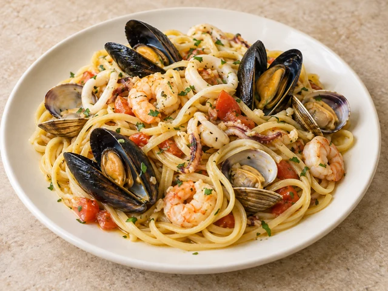
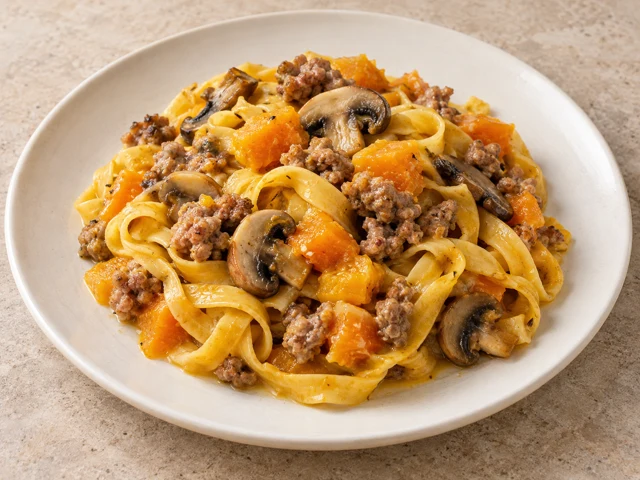
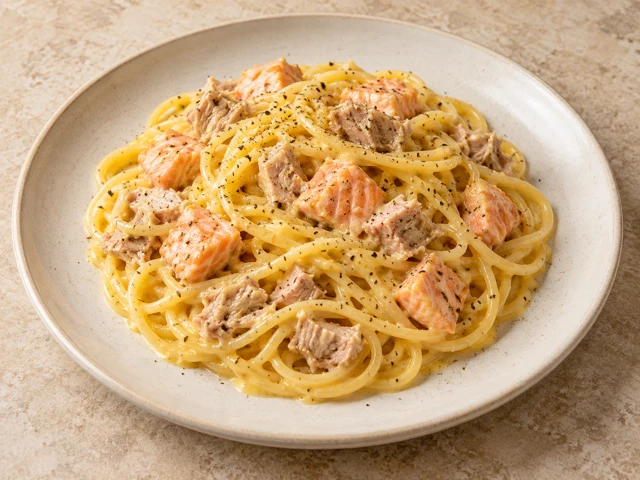
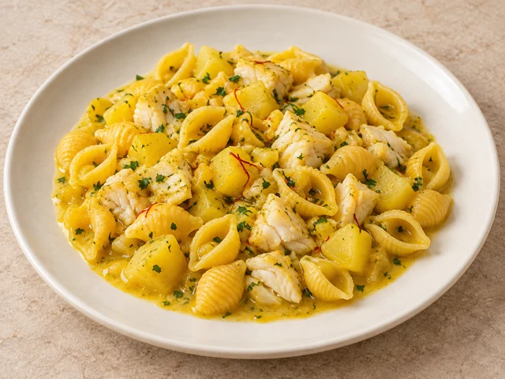
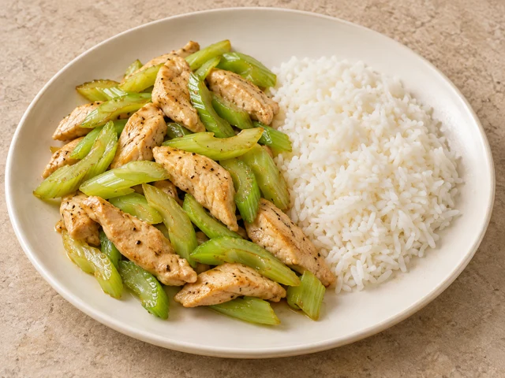
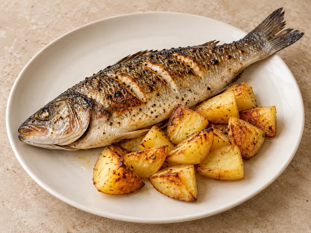
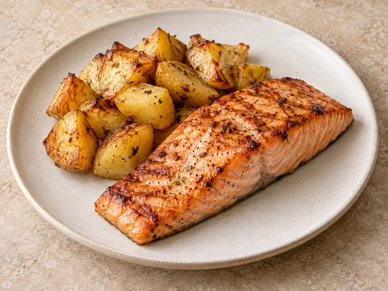
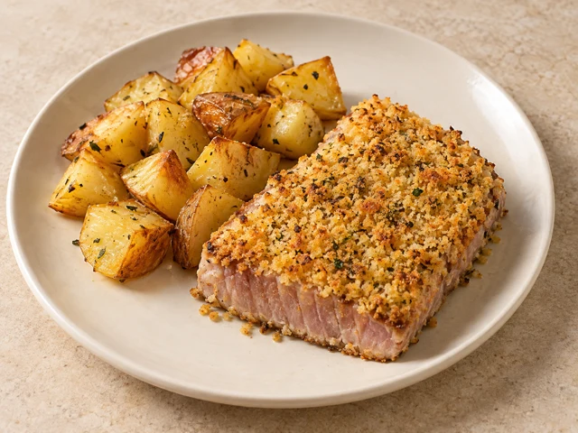
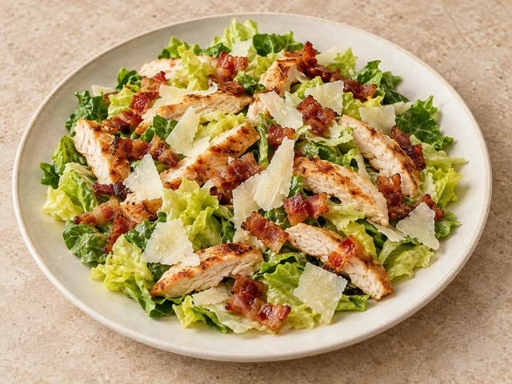

Linguine ai frutti di mare
Linguine con un assortimento di frutti di mare, tra cui gamberetti*.
010214
Valido solo a pranzo,
nel giorno sotto indicato

Linguine con un assortimento di frutti di mare, tra cui gamberetti*.
010214

Tagliatelle con zucca, funghi e salsiccia.
0103

Spaghetti alla carbonara di mare con tonno e salmone.
01030407

Conchigliette con patate, branzino e zafferano.
0104

Straccetti di pollo con sedano, accompagnati da riso bianco al vapore.
09

Branzino alla griglia, accompagnato da patate al forno.
04

Salmone alla griglia, accompagnato da patate al forno.
04

Tonno rosso gratinato al forno, accompagnato da patate al forno.
0104

Pollo, pancetta e scaglie di Grana.
07
Le immagini dei piatti, pur realistiche, sono generate con intelligenza artificiale e hanno scopo illustrativo.
Attendere la conferma del Ristorante per considerare valido l’ordine.